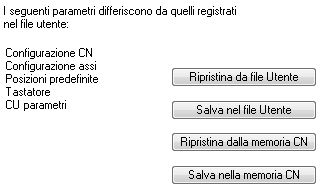

Esegue un controllo tra i parametri ricevuti dal CN e quelli registrati nel file utente, segnalando in una lista il gruppo dei parametri che risultano diversi. Fare doppio clic sulla voce riportata nella lista, per accedere direttamente al gruppo di parametri.

Fare clic sul pulsante per inviare al CN tutti i parametri registrati nel file utente; non viene eseguito il salvataggio nella memoria permanente del CN.
Fare clic sul pulsante per salvare tutti i parametri del CN nel file utente.
Fare clic sul pulsante ; invia al CN un comando per il ripristino di tutti i parametri registrati nella sua memoria permanente.
Fare clic sul pulsante ; invia al CN un comando per il salvataggio di tutti i parametri correnti nella sua memoria permanente.